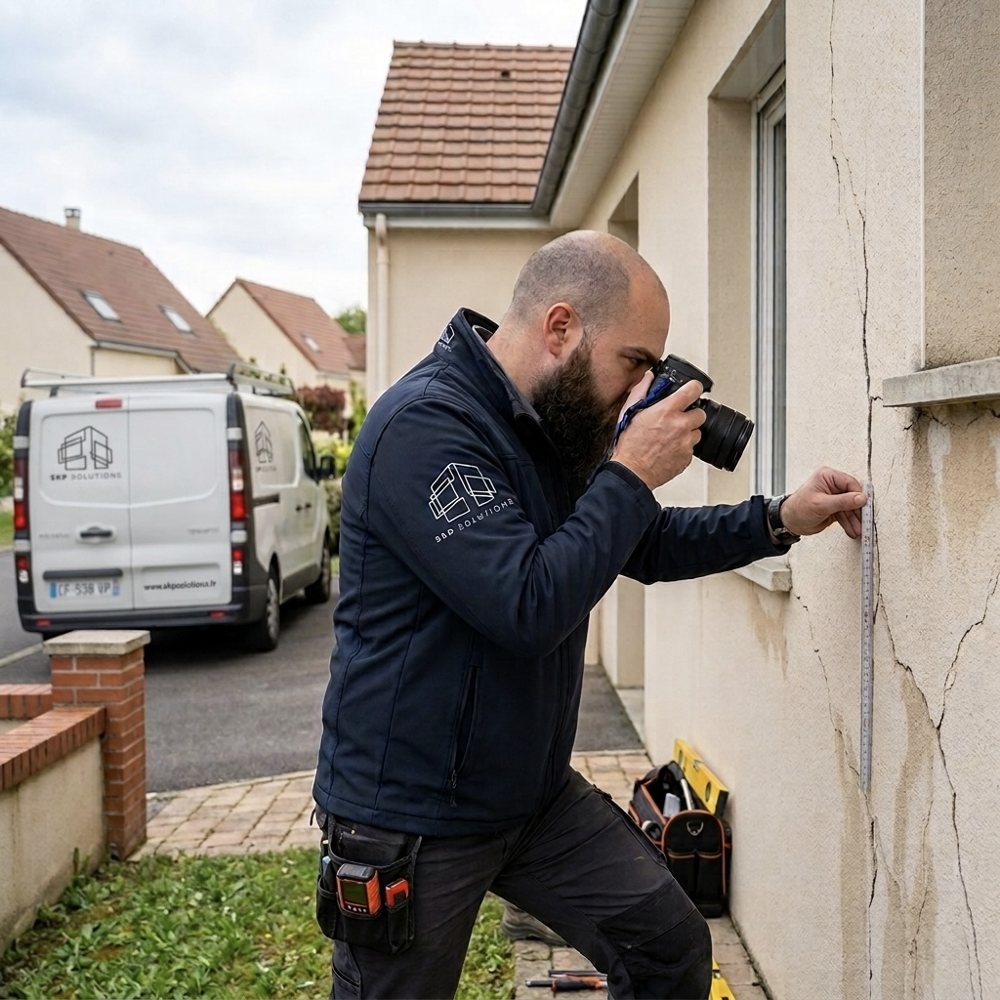
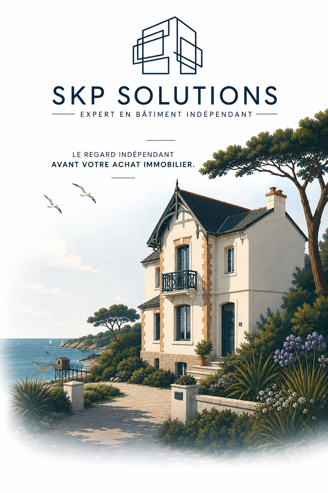

Avant de signer,
faites-vous accompagner.
Je m'appelle Stéphane Guillain. Après 18 ans passés sur les chantiers chez Léon Grosse, VINCI et Bouygues Construction, j'accompagne aujourd'hui les particuliers qui veulent savoir dans quoi ils s'engagent.
- Aucun lien avec une entreprise de travaux ni une agence
- C'est moi qui me déplace, jamais un sous-traitant
- Rapport photographié, chiffré, utilisable pour négocier
- Devis sous 24 h, sans engagement
Loire-Atlantique, Vendée et départements limitrophes.
de chantier en entreprise générale
pour recevoir votre devis
indépendant, sans commission
assurance professionnelle à jour
Mes prestations
Ce sur quoi j'interviens
Chaque mission commence par un échange pour comprendre votre situation. Si je ne suis pas la bonne personne, je vous le dis.
Expertise avant achat
Je visite le bien avec vous avant le compromis. État réel de la structure, travaux à prévoir, montants chiffrés : vous savez ce que vous achetez et sur quoi négocier.
En savoir plusRéception de travaux
Je vous assiste le jour de la livraison. Les réserves sont relevées, formulées correctement et consignées au PV — c'est ce document qui fera foi ensuite.
En savoir plusFissures & humidité
Fissures qui évoluent, salpêtre, infiltrations : j'identifie la cause avant de parler solution. Un diagnostic posé évite de payer des travaux qui ne règlent rien.
En savoir plusAssistance à maîtrise d'ouvrage
Vous construisez ou rénovez. Je lis les devis, je vérifie l'avancement, je fais le lien technique avec les entreprises — vous restez décisionnaire, sans subir le vocabulaire.
En savoir plusPermis & déclarations préalables
Extension, garage, changement de destination : je monte le dossier, je le dépose et je suis l'instruction jusqu'à l'arrêté.
En savoir plusVotre situation n'est pas dans la liste
Appelez-moi. Cinq minutes au téléphone suffisent le plus souvent à savoir si une expertise est utile — et si elle ne l'est pas, je vous le dirai.
Me contacter
Pourquoi un expert indépendant
Je ne travaille pour personne d'autre que vous.
L'expert envoyé par une assurance défend l'assurance. L'artisan qui diagnostique gratuitement vend ensuite les travaux qu'il a diagnostiqués. Dans les deux cas, l'avis que vous recevez n'est pas neutre.
Je ne vends aucun travaux, je ne touche aucune commission d'apporteur, je n'ai aucun accord avec une agence. Mes honoraires sont ma seule rémunération — c'est ce qui me permet de vous dire qu'un bien ne vaut pas son prix, ou qu'un désordre est bénin alors que vous vous inquiétez.
Stéphane Guillain Président — SKP Solutions, Sainte-Pazanne (44)
Le déroulement
Comment se passe une expertise
De votre appel au rapport remis, quatre étapes et une dizaine de jours.
-
Vous m'appelez
Vous m'exposez la situation. Je vous dis franchement si une expertise se justifie, et je vous envoie un devis clair sous 24 h.
-
Je prépare la visite
J'analyse en amont les documents disponibles : diagnostics, plans, DPE, cadastre, zonage. J'arrive sur place en sachant quoi regarder.
-
Je visite le bien
Deux à trois heures sur place, relevés, mesures et photographies. Vous m'accompagnez si vous le souhaitez : c'est souvent le moment le plus utile.
-
Vous recevez le rapport
Sous une semaine : constats photographiés, causes identifiées, désordres hiérarchisés et travaux chiffrés. Puis on en parle au téléphone.
Secteur d'intervention
Basé à Sainte-Pazanne, en Loire-Atlantique
J'interviens principalement sur le sud-Loire, le vignoble nantais, le pays de Retz et la côte, ainsi qu'en Vendée. Connaître le bâti local compte : les maisons de bourg en tuffeau, les pavillons des années 70 et les constructions littorales ne posent pas les mêmes questions.
- Nantes
- Pornic
- Sainte-Pazanne
- Machecoul
- Clisson
- Saint-Nazaire
- Vertou
- Challans
- Rezé
- Bouaye
- Saint-Philbert-de-Grand-Lieu

Questions fréquentes
Ce qu'on me demande le plus souvent
Combien coûte une expertise avant achat ?
Le tarif dépend de la surface du bien, de son ancienneté et de la distance. Vous recevez un devis ferme sous 24 h après notre échange téléphonique, sans engagement. Rapporté à ce qu'une expertise permet d'éviter ou de renégocier, l'investissement est en général vite amorti.
Puis-je faire intervenir un expert avant de signer le compromis ?
Oui, et c'est même le meilleur moment. Avant le compromis, vous êtes libre de renoncer ou de renégocier sans contrainte. Après signature, vous disposez encore du délai de rétractation de dix jours, mais la marge de manœuvre est plus étroite. Prévenez le vendeur ou l'agence : une seconde visite d'environ deux heures est nécessaire.
Le rapport peut-il servir à négocier le prix ?
C'est l'un de ses usages principaux. Le rapport chiffre les travaux à prévoir poste par poste, avec les montants HT et TTC. Face à un vendeur ou à une agence, un document technique daté et photographié pèse infiniment plus qu'une estimation orale.
Êtes-vous diagnostiqueur immobilier ?
Non, et les deux métiers ne se confondent pas. Le diagnostiqueur réalise les diagnostics réglementaires obligatoires à la vente (DPE, amiante, plomb, termites, électricité). Mon travail est différent : j'analyse la structure, la charpente, la couverture, les réseaux et les pathologies, j'en cherche les causes et je chiffre les reprises. Je m'appuie d'ailleurs sur vos diagnostics obligatoires, que je recoupe avec ce que j'observe sur place.
Sous quel délai intervenez-vous ?
Comptez généralement cinq à dix jours entre la validation du devis et la visite, selon mon planning et votre secteur. En cas d'urgence — délai de rétractation qui court, sinistre en cours — dites-le-moi : je m'organise autrement quand c'est possible.
Intervenez-vous aussi sur du neuf ?
Oui. Réception de maison individuelle (CCMI), livraison en VEFA, levée de réserves : ce sont des missions courantes. Les défauts constatés en réception sont plus faciles à faire reprendre que ceux découverts six mois plus tard.
Parlons de votre projet
Un doute ? Un appel suffit souvent
à y voir clair.
Exposez-moi votre situation. Je vous dis ce qui relève d'une expertise, ce qui n'en relève pas, et sous quel délai je peux intervenir.